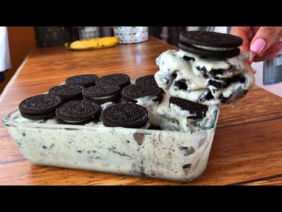
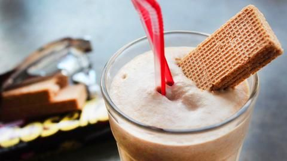

720 ideas de Postres en 2021 | postres, recetas dulces, postre

Postres
Collection by Marieta Bel • Last updated 13 days ago
730 Pins • 215.75k Followers Mini Desserts Delicious Desserts Dessert Recipes Yummy Food Panna Cotta Kolaci I Torte Eat Dessert First Special Recipes Food DesignPanna cotta de Nutella y vainilla. Receta especial para San Valentín
Te explicamos paso a paso, de manera sencilla, la elaboración de Panna cotta de Nutella y vainilla. Ingredientes, tiempo de elaboración…
1:03 Fancy Desserts Delicious Desserts Yummy Food Gourmet Desserts Cakes That Look Like Food Christmas Food Photography Sweet Recipes Cake Recipes Rainbow FoodPanna cotta al cioccolato con salsa di lamponi e more
· 1 review ·Un dolce al cucchiaio goloso e d'effetto, ideale per chi ama il cioccolato e cerca una ricetta facile: la panna cotta al cioccolato con salsa di lamponi e more. Servite queste graziosissime monoporzioni come dessert di fine cena con gli amici, e non solo, il successo è assicurato.
Apple Recipes Clean Recipes Easy Dinner Recipes Sweet Recipes Cooking Recipes Mexican Food Recipes Dessert Recipes Xmas Food My DessertPUDIN NAVIDEÑO de manzanas
· 1089 reviews · 50 minutes ·Una estupenda receta de pudin de manzana para los que busquen un postre diferente estas navidades
Mini Cakes Cupcake Cakes Cupcake Recipes Dessert Recipes Menta Chocolate Decadent Chocolate Delicious Chocolate Decoration Patisserie Let Them Eat Cake6 postres individuales para tus celebraciones navideñas - A gusto en casa
Los postres individuales son la solución perfecta para poner el broche de oro a tus celebraciones navideñas. No te pierdas estos 6 postres muy especiales.
Delicious Desserts Dessert Recipes Yummy Food Homemade Chocolate Sweet Recipes Bakery Food Porn Food And Drink Cooking RecipesPuro romanticismo en 10 postres de chocolate para San Valentín
Descubre los postres de chocolate más deliciosos y románticos especialmente pensados para que celebres el día de San Valentín.
Cherry Desserts Fancy Desserts Gourmet Desserts Sweet Desserts Plated Desserts Just Desserts Sweet Recipes Delicious Desserts Cake RecipesFotos: Postres para Navidad: 35 ideas originales
En Navidad nos encanta comer y compartir con la familia. Y los postres son una de nuestras partes favoritas del menú. Por eso te traemos ideas originales para los postres navideño
No Cook Appetizers Delicious Deserts Food Garnishes Gourmet Desserts Canapes Sweet Recipes Catering Sushi CheesecakeGalletas de pistacho con stracciatella de avellanas - La cocina de Jose Luis
Las galletas de pistacho con stracciatella de avellanas, es mi postre favoritode este principio de año 2020…. espero que te guste tanto hacerla y comerla ( 😉 ), como a mi Ingredientes 250 g harina 1 huevo 100 g azúcar 100 g pistachos picados (deja unos poquitos para la straciatella) Una chispa de colorante verde, […]
Creme Caramel Italian Recipes Sweet Recipes Panna Cotta Sweets Cooking Ethnic Recipes Desserts TriflesPanna Cotta de Naranja
Desde que probé la Panna Cotta por primera vez, me quedé enganchada a ella. Así que como tenía por casa nata a la que dar salida, me di
1 21Pudin de mango
Empanada Spanish Desserts Christmas Deserts Mini Cheesecakes Sweet Cakes Sin Gluten Mini Cakes Low Carb Recipes Tapas
Espuma de turrón
· 21 reviews · 30 minutes ·La espuma de turrón es una forma muy original de acabar una comida navideña o si usas las sobras de turrón de Jijona de esas fechas, para cualquier día del año es un excelente postre.
Pudding Recipes Cake Recipes Dessert Recipes No Cook Desserts Delicious Desserts Cheesecake Cake Mini Pies Sweet Recipes Cupcake CakesBusca entre 530.000 recetas. Con el motor de búsqueda de myTaste.es puedes buscar recetas en las páginas web españolas de recetas más grandes.
Individual Desserts Mini Desserts Plated Desserts Dessert Recipes Mini Cakes Cupcake Cakes Mexican Buffet Bite Size Food Baked Alaska29 postres típicos de mamá en versión moderna (porque los suyos son insuperables)
29 postres típicos de mamá en versión moderna (porque los suyos son insuperables)
Desserts To Make Vegan Desserts Kombucha Flan Mango Mousse Cake Shot Glass Desserts Panna Cotta Mango Puree Dessert BuffetMango en puré con mousse de yogur y galletas speculoos
Puré de mango con mousse de yogur y el toque crujiente de las galletas speculoos, un postre fácil y rápido de hacer, con un sabor delicioso.
Pudding Ethnic Recipes Desserts Food Sweets Lemon Desserts Tailgate Desserts Deserts EssenTIRAMISÚ DE LIMÓN
Los postres de limón son ideales para el verano, son refrescantes y digestivos. Si eres amante de los postres con queso, este tiramisú te
No Bake Desserts Panna Cotta Cereal Sweet Treats Cheesecake Pudding Baking Breakfast Ethnic RecipesTiramisù, la receta auténtica
Alérgenos: Leche, huevos, trigo. Valor nutricional: 4 porciones Cantidad por porción: Calorías 394 Grasas 26.1 g Colesterol 264 mg Sodio 34.3 mg Potasio 74.3 mg Total Carbohídratos 32.1 g Fibra 1 g…
Chocolate Puro Lemon Curd Dessert Recipes Desserts Truffles Candy Food Icebox Pie Pastries RecipesBocaditos de lemon curd y chocolate - L´Exquisit
Estos bocaditos son ideales para tener en el congelador. Si tienes visitas inesperadas o un capricho, siempre puedes echar mano de ellos
Privacy